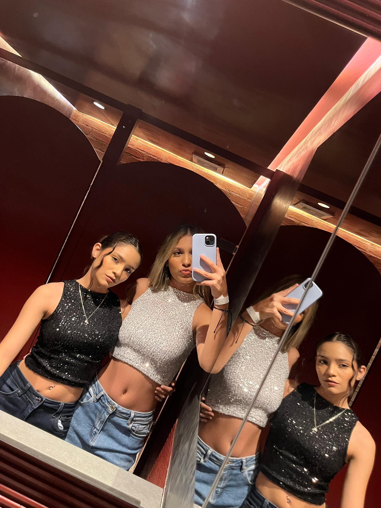
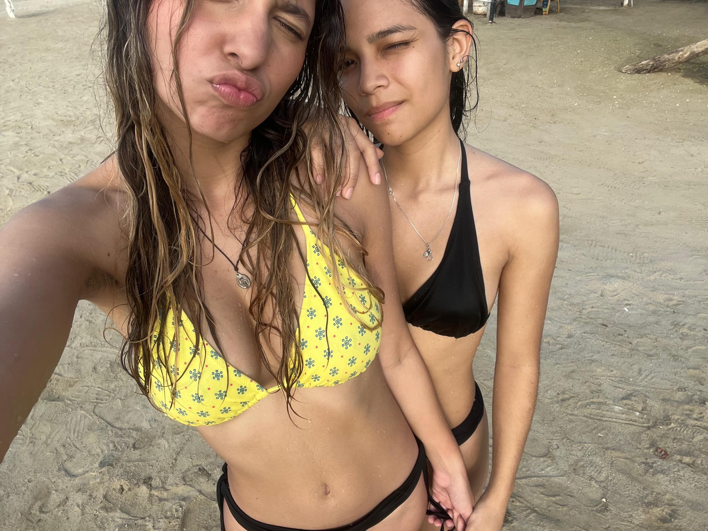
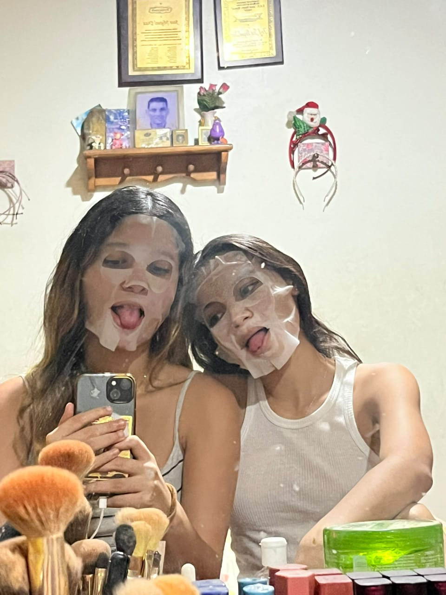
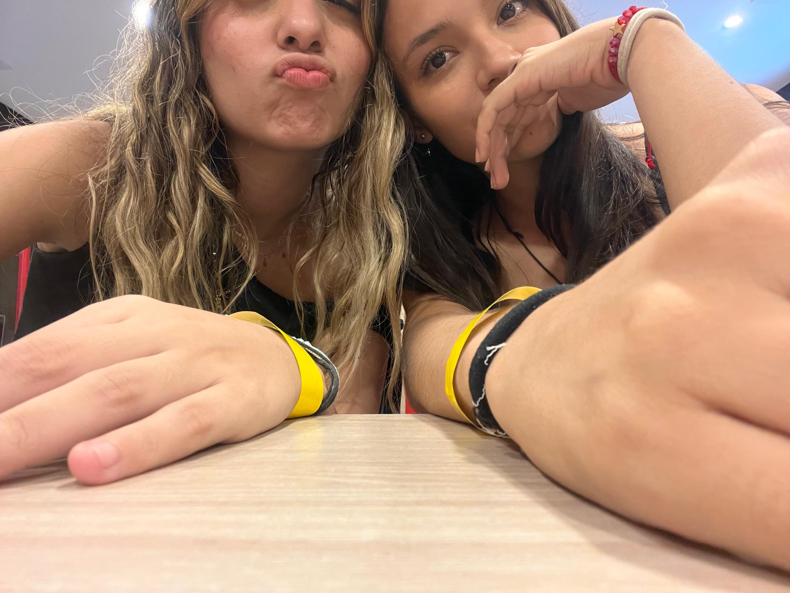
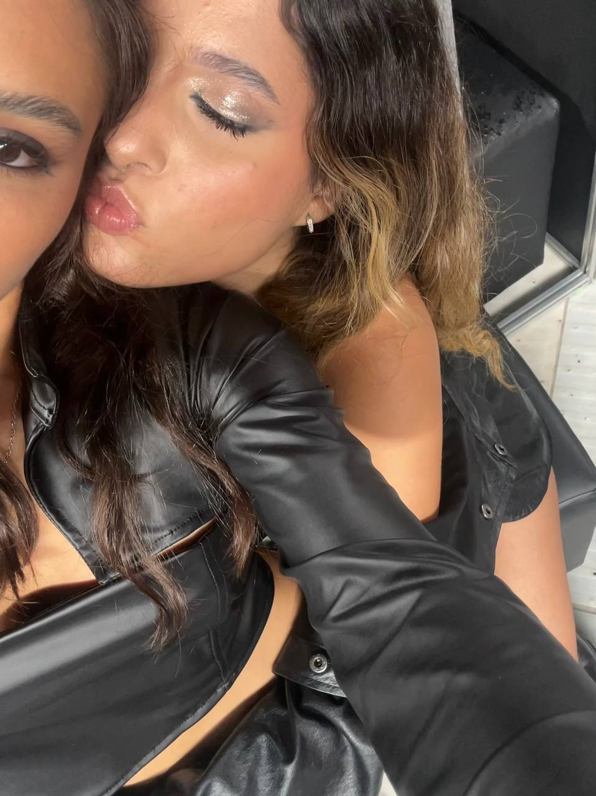

Algunas de nuestras memorias
Ojalá pudiera poner aquí todo lo lindo y horrible que vivimos juntas, pero resumir 4 años en fotos y palabras es demasiado
Ver memoriasFlashbacks

Ese día nos peleamos
No sé que decir, era el cumpleaños de moises creo

Fue lindo tenerte ahí
Todos nos vieron

Noche de mascarillaaaa C:
Lo bueno duró poco :"c

Ese día fue increíble
También merece una buena redacción de historia

.... Ti.. Tini
Los demás por delante

Gracias por estar ahí
Gracias por hacerme creer en mi y por decirme que era la mejor.
Canciones
Si quieres las escuchas, la mayoría las tienes que traducir, sigo sintiendo todas y cada una de ellas. No las escogí por escogerlas.
Creo que es el último mensaje que te daré.
Pude haber escrito muchas cosas, agregado más imágenes, hacer algo completo y desahogarme pero la verdad es que ya no me sale nada, ya no quiero decir nada, con las fotos en días malos creo que muchas veces hablé sobre eso, como de costumbre no debes recordarlo o no prestaste atención, solo te causó fastidio, y con la única foto buena espero que recuerdes si ese día fue bueno y el porque, si fue malo alguno de esos días para ti no lo sabré, nunca hablas. Me gustó demasiado crear esto pero continuarlo con una temática sobre ti era muy idiota, seguir perdiendo el tiempo en ti es absurdo. A día de hoy no se que quiero, lo único que quiero es tener una vida estable y ya, poder bailar, es lo único que me mantiene en pie, decirte adiós es una manera de seguir adelante sola sin nadie que me retrace. Sé feliz es lo único que te pido y no lastimes a nadie más.